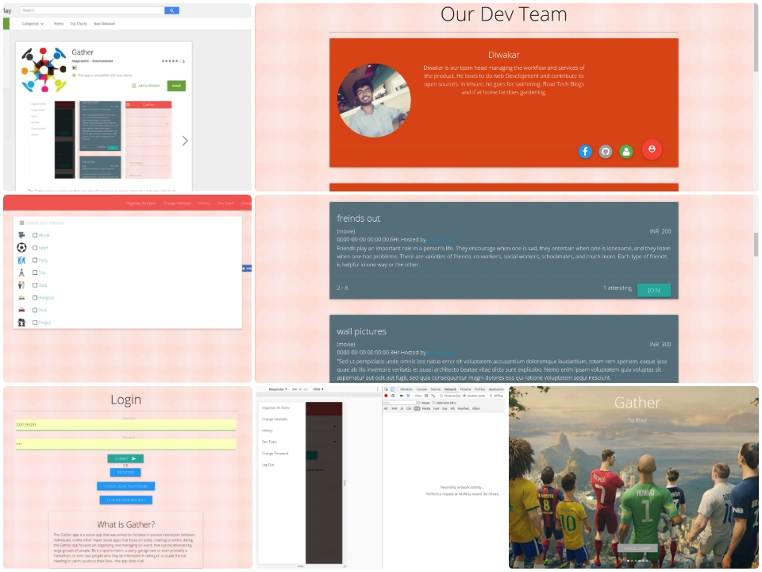
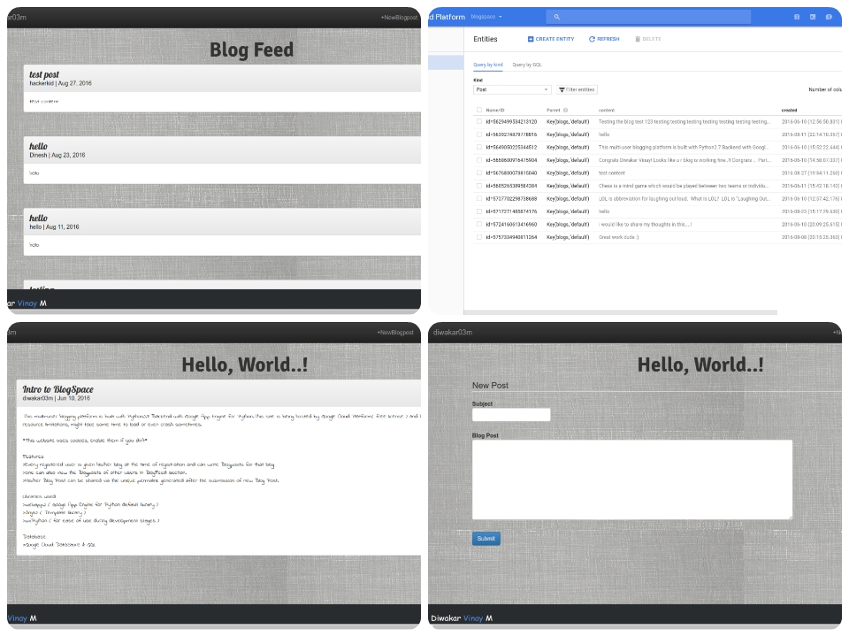
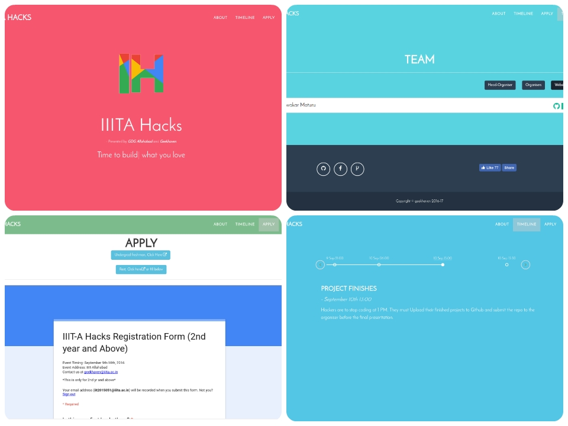
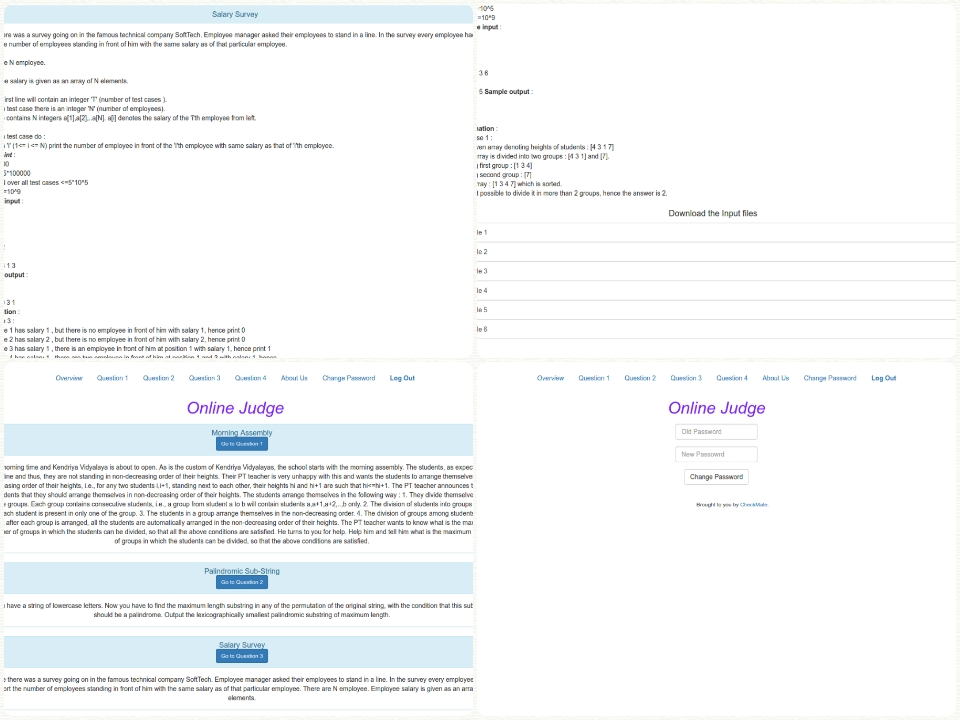
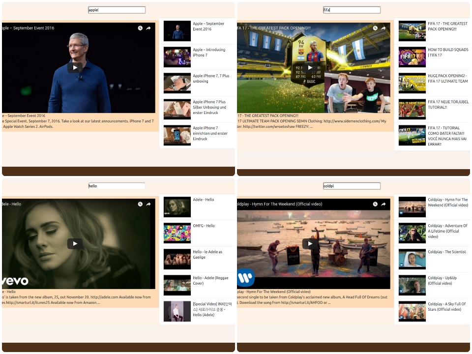
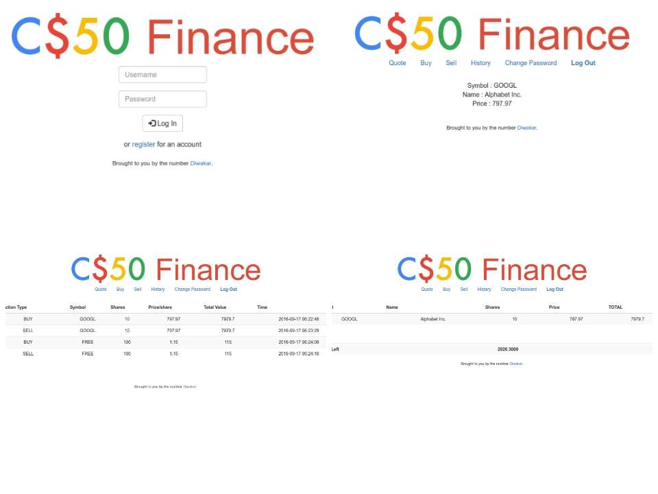
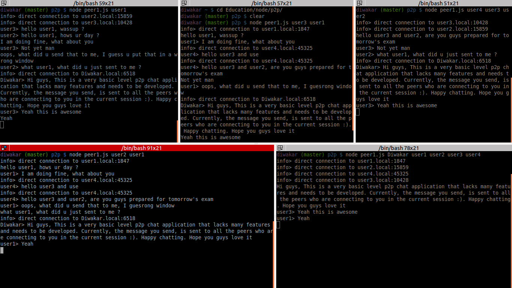
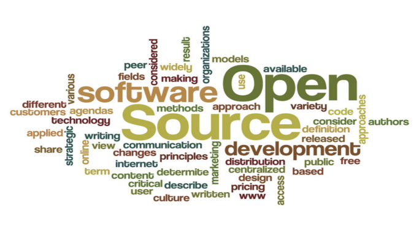

Diwakar
Undergrad student in Information Technology,
focus on Algorithms, Web Development and Open-Sources.
-
May 2017 - present
GSoC Student Software Developer, Moodle
Working on improving/updating the Development Enviroment with latest technologies, write Protractor tests to automate the Pre-Production End-to-End Testing and integrate the App Development with SauceLabs and TravisCI
-
May 4, 2017
Google Summer of Code 2017
Selected for Google Summer of Code 2017 to work under Moodle Organisation on their Moodle Mobile Project "Improve End-to-End Testing in the Mobile App"
-
Jan 2017 - Present
Open Source Contributor, Moodle
Active and Regular contributor of their project Moodle Mobile which bring Web Services of Moodle to Mobile(Android & iOS). Fixed critical bugs and added important features (context menu functionalities in modules, message search, Module Prefetch for Resources and others)
-
Dec 2016 - Feb 2017
Mentor, OpenCode
Mentored various students in OpenCode, Nation-wide Inter-College Open Source event by IIITA.
-
Nov 2016 - April 2017
Workshops & Talks Organiser, Aparoksha'17
Worked for Aparoksha 2017 (annual technical fest) of our college. Organised various Workshops & Talks to empower and enlighten the students with skills and thoughts from great minds in the Tech Industry
-
March 2016 - April 2017
Software Developer, FOSS - GeekHaven - IIITA
Organised & participated in various events like IIITA-Hacks, Open-Source workshops, OpenCode. Worked upon many projects related to our college.
-
July 2015 - Present
IT Undergrad, IIIT Allahabad
Started Bachelors of Technology, Information Technology course in IIIT Allahabad, India.
-
Gather
-
Gather is a cross-platform Event-Organisation service where anyone can host their events, attend any events in their desired localities, and view all the events happening around them.
The rudimentary version of this project is done in HackInTheNorth hackathon organised by IIIT-Allahabad. Later enhanced and extended it to other platforms like Android and Messenger bots in another hackathon IIITA-Hacks organised by same college. It is also available in Google PlayStore. Sample service of the products(Web, Android) can be shown upon request as I host it for temporarily on sandboxed servers. -
-
Gather is a cross-platform Event-Organisation service where anyone can host their events, attend any events in their desired localities, and view all the events happening around them.
-
BlogSpace
-
A simple blogging platform for everyone to post and share their blogs.
I built it using the 'Google WebApp2' python library for backend, BootStrap, CSS, HTML, JavaScript for FrontEnd and Google DataStore for Database management. User Accounts and Security is taken care of. Blogpost only take text without any images and stored as String in the DataStore. It is now in production on Google Cloud Platoform. -
-
A simple blogging platform for everyone to post and share their blogs.
-
IIITAHacks Website
- It is the official website of Intra-College hackathon. This is a static site with BootStrap, HTML, CSS, JS and various other JQuery plugins. The attractive color-changing background is done using CSS-KeyFrame Animation. The site also has Facebook like button embedded in it.
-
-
Online Judge
-
Google Code Jam style Online Judge.
This uses PHP for the backend, BootStrap, HTML, CSS, JS for front-end, MySQL for databases. Built on MVC framework. The output files are compared using their checksums. I built the entire website as a part of Tri-Hacker contest in our college. -
-
Google Code Jam style Online Judge.
-
Youtube Instant
- Browse and play YouTube videos instantly like Google Instant Search. This uses React for component renderring in the views, WebPack-dev-server and Node for controller part. This doesnt use any Database, instead uses Youtube Search API for browsing the YouTube. It consists of 3 major components, search bar, video-list and currently-playing video. Built this following a Udemy course on React.
-
-
Finance & Trading
- This is a coursework of Harvard CS50 PSet7. I should abide the Honor Code and couldnt reveal much of the details regarding this project. It uses PHP for backend, built on MVC framework, and HTML,CSS, JavaScript, BootStrap for front-end. All the stock values are real-time and fetched via Yahoo-Finance API, provided in PSet BoilerPlate. The source-code of the project is not public, instead demo of the project can be shown upon request.
-
-
Peer To Peer Chat
- Super secure chat service using Peer to Peer technology. Built with NodeJS and NPM modules written by Mafintosh. This does not use any database and runs on command line interface. All the usernames are temporary and will be vanished after the session. It also support basic level group chat and indivial private chat. It does not contain logs of any conversation and is super secure for confidential messages.
-
-
Open Sources
- Along with all the personal projects, I also contribute actively to the open-source, mostly to the Technical society of our college. Currently, I am willing to contribute to open-source organisations which help in making the world a better place to live in.
{% if site.duoshuo_username %}
-